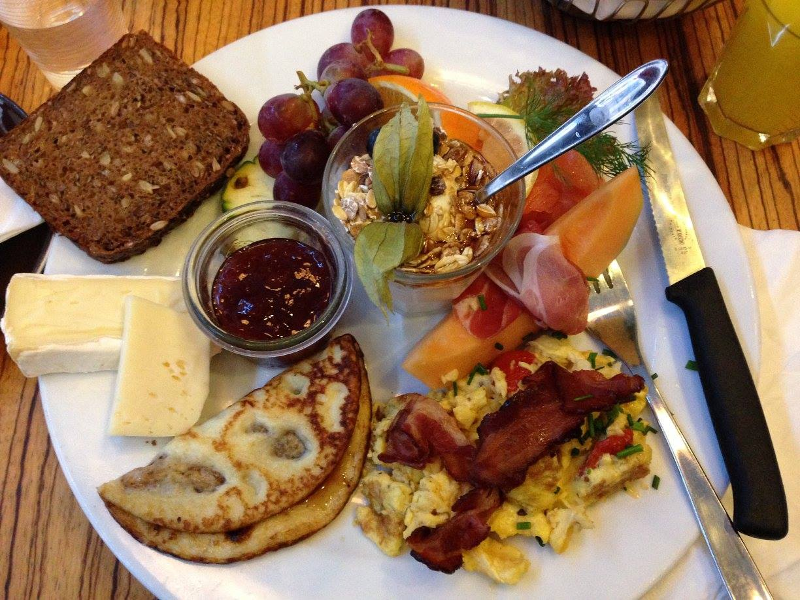

Hygge Description
A classic Danish breakfast is made up of a variety of bread topped with cold meats, jams, and and soft cheese. On special occasions, soft boiled eggs, fruit, and yogurt is also served. Although originating in Denmark, we take a very American take on the Danish Breakfast, adding Spanish style cold meats, eggs your style, and lots of Avocado. At Hygge (the Danish word for that coziness of winter) we believe that breakfast should be served at anytime of day, or year. Come cozy up with a cup of coffee or our special mimosas, and enjoy a decedent take on the Danish Breakfast.